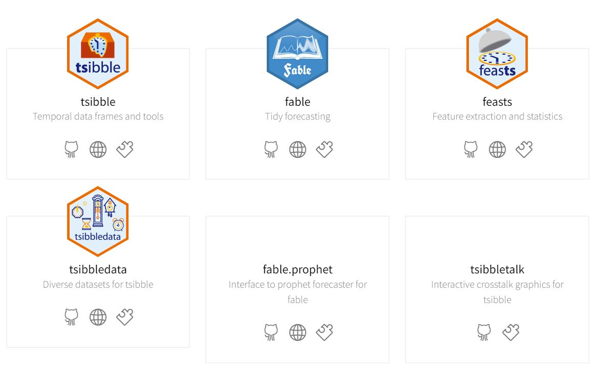

Aura Frizzati - NHS Wales Executive | Digital Intelligence)
Published
December 4, 2023
Code
## load relevant libraries## from tidyverselibrary(dplyr) ## data wranglinglibrary(stringr) ## handling of stringslibrary(purrr) ## functional programminglibrary(readr) ## r objects' import/exportlibrary(ggplot2) ## r plotting## from tidyvertslibrary(tsibble)library(fable)library(fabletools)library(feasts)## otherslibrary(statswalesr) ## import data from StatsWaleslibrary(plotly) ## interactive ggplotslibrary(gt) ## html table formattinglibrary(renv) ## create r environment for sharingoptions(scipen =999) ## remove scientific notation
1. Intro: Tidyverts packages
They are “tidy” tools created to handle time series (tidyverts.org). They are based on and extend the tidyverse collection of packages.

Add something about what time series are and other packages available in R to handle them
These are aggregated monthly attendances to Emergency Dept (ED), partitioned by:
Local Health Board & Hospital Site
Patient Sex
Patient Age group.
We can directly extract the whole dataset in R using the statswalesrpackage, using the Open Data table code (HLTH0037)
## **WARNING: this step might take some time**HLTH0037_data_raw <- statswalesr::statswales_get_dataset("HLTH0037")HLTH0037_metadata <- statswalesr::statswales_get_metadata("HLTH0037", language ="english")
3. Data cleaning
Removed redundant columns
Modified columns’ names
Attached Local Health Boards’ names to geographical codes (lookup retrieved from Gov Wales Table 9)
## [1] re-import the data saved locallyHLTH0037_data_raw <-read.csv("data/HLTH0037_data_raw.csv")HLTH0037_metadata <-read.csv("data/HLTH0037_metadata.csv")#names(HLTH0037_data_raw)## [2] Select only relevant folumns and rename themHLTH0037_data <- HLTH0037_data_raw |> dplyr::select( Date_ItemName_ENG, ## Time as Month&Year Data, ## Number of ED Attendances Hospital_ItemName_ENG, ## Hospital name Hospital_Hierarchy, ## Local Health Board code Age_ItemName_ENG, ## Age groups Sex_ItemName_ENG ## Sex groups ) |>## rename the columns dplyr::rename(MonthYear = Date_ItemName_ENG,Attendances = Data,Hospital = Hospital_ItemName_ENG,LHB_code = Hospital_Hierarchy,Age_band = Age_ItemName_ENG,Sex = Sex_ItemName_ENG ) # Check the filtered datahead(HLTH0037_data) |> gt::gt() |>## transforming the data into a table with specified formatting gt::tab_options(table.font.size =12)## [3] create the lookup for LHB names/codes and attach the LHB names to ED dataNHSWalesOrg_lookup <-data.frame("Organisation"=c("Betsi Cadwaladr", "Powys Teaching", "Hywel Dda", "Swansea Bay","Abertawe Bro Morgannwg", "Cwm Taf Morgannwg","Cwm Taf", "Aneurin Bevan","Cardiff & Vale", "Wales"),"Geographical_code"=c("W11000023", "W11000024","W11000025", "W11000031","W11000026", "W11000030","W11000027", "W11000028","W11000029", "W92000004"))NHSWalesOrg_lookup |> gt::gt() |> gt::tab_options(table.font.size =12)HLTH0037_data_v2 <- HLTH0037_data |> dplyr::left_join( NHSWalesOrg_lookup,by =c("LHB_code"="Geographical_code"))head(HLTH0037_data_v2) |> gt::gt() |> gt::tab_options(table.font.size =12)## [4] Look at the summary of the variables in the tableunique_values<- HLTH0037_data_v2 |> dplyr::select(Organisation,Age_band,Sex,Hospital,MonthYear) |> purrr::map(~ stringr::str_c(unique(.x), ## distinct values/columncollapse =",")) |> dplyr::bind_rows() |> tidyr::gather(key =`Col name`, value =`Unique values`) N_unique_values<- HLTH0037_data_v2 |> dplyr::select(Organisation,Age_band,Sex,Hospital,MonthYear) |> purrr::map(~length(unique(.x)))|>## n distinct values/column dplyr::bind_rows() |> tidyr::gather(key =`Col name`, value =`N unique values`)N_missing_values<- HLTH0037_data_v2 |> dplyr::select(Organisation,Age_band,Sex,Hospital,MonthYear) |> purrr::map(~sum(is.na(.x)))|>## n missing values/column dplyr::bind_rows() |> tidyr::gather(key =`Col name`, value =`N missing values`) class_variables <- HLTH0037_data_v2 |> dplyr::select(Organisation,Age_band,Sex,Hospital,MonthYear) |> purrr::map(~class(.x))|>## extract variable class/column dplyr::bind_rows() |> tidyr::gather(key =`Col name`, value = Class) cbind( unique_values, N_unique_values|> dplyr::select(`N unique values`), N_missing_values|> dplyr::select(`N missing values`), class_variables|> dplyr::select(Class) ) |> gt::gt() |> gt::tab_options(table.font.size =12) |> gt::cols_align(align ="left")
Code
## [5] Final changes: aggregate age groups, convert time column from character into date format (monthly), shorten LHB names, group Attendances counts by all variables' combinations (MonthYear x Hospital X Age group X Sex) ## **WARNING: this step might take some time**HLTH0037_data_v3 <- HLTH0037_data_v2 |> dplyr::mutate(## Aggregating age groups within Age_bandAge_band = dplyr::case_when( Age_band %in%c("0-4","5-17") ~"0-17", Age_band %in%c("18-24","25-29","30-34","35-39","40-44","45-49","50-54","55-59","60-64","65-69") ~"18-69", Age_band %in%c("70-74","75-79","80-84","85 and over") ~"70+",TRUE~ Age_band),## Converting MonthYear column from character to date formatMonthYear = tsibble::yearmonth(MonthYear),## Convert LHB full names into shorter onesLHB = dplyr::case_when( Organisation =="Aneurin Bevan"~"AB UHB", Organisation =="Cardiff & Vale"~"CAV UHB", Organisation =="Abertawe Bro Morgannwg"~"ABM", Organisation =="Powys Teaching"~"PT HB", Organisation =="Betsi Cadwaladr"~"BC UHB", Organisation =="Cwm Taf"~"Cwm Taf", Organisation =="Hywel Dda"~"HD UHB", Organisation =="Cwm Taf Morgannwg"~"CTM UHB", Organisation =="Swansea Bay"~"SB UHB" ) ) |> dplyr::group_by_at(vars(-Attendances)) |> dplyr::summarise(Attendances =sum(Attendances)) |> dplyr::ungroup()readr::write_rds(HLTH0037_data_v3, "data/HLTH0037_data_v3.rds")
note: index must be in a date-type format (converted from character variable in raw data to MonthYear using tsibble::yearmonth())
HLTH0037_data_ts <- HLTH0037_data_v3 |> tsibble::as_tsibble(## index = time column in the tableindex = MonthYear, key =c(Hospital,Sex,Age_band, LHB) )HLTH0037_data_ts
# A tsibble: 18,854 x 8 [1M]
# Key: Hospital, Sex, Age_band, LHB [418]
MonthYear Hospital LHB_c…¹ Age_b…² Sex Organ…³ LHB Atten…⁴
<mth> <chr> <chr> <chr> <chr> <chr> <chr> <int>
1 2016 Apr Breconshire War Memori… W11000… 0-17 Fema… Powys … PT HB 81
2 2016 May Breconshire War Memori… W11000… 0-17 Fema… Powys … PT HB 67
3 2016 Jun Breconshire War Memori… W11000… 0-17 Fema… Powys … PT HB 62
4 2016 Jul Breconshire War Memori… W11000… 0-17 Fema… Powys … PT HB 66
5 2016 Aug Breconshire War Memori… W11000… 0-17 Fema… Powys … PT HB 56
6 2016 Sep Breconshire War Memori… W11000… 0-17 Fema… Powys … PT HB 71
7 2016 Oct Breconshire War Memori… W11000… 0-17 Fema… Powys … PT HB 56
8 2016 Nov Breconshire War Memori… W11000… 0-17 Fema… Powys … PT HB 53
9 2016 Dec Breconshire War Memori… W11000… 0-17 Fema… Powys … PT HB 38
10 2017 Jan Breconshire War Memori… W11000… 0-17 Fema… Powys … PT HB 42
# … with 18,844 more rows, and abbreviated variable names ¹LHB_code, ²Age_band,
# ³Organisation, ⁴Attendances
library(dygraphs) # interactive time serieslibrary(xts) # create time series objects (class xs)dygraphs::dygraph( tsbox::ts_xts(ByLHB_ts), ## convert tsibble object into xtsmain='ED Attendances by LHB',y ="Monthly ED Attendances",x ="Month Year")|>dyRangeSelector()
5.2 Seasonal plots
standard seasonal plot: feasts::gg_season(period)
AllWales_ts |> feasts::gg_season(y = Attendances, period ="year") +labs(title ="All Wales ED Attendances - Seasonal plot")
Interface for external libraries: Facebook Prophet and tscount (for count time series)
Fitting benchmark models.
Same syntax as when we fitted STL:
fabletools::model(MODEL_NAME(y ~ predictors))
This creates a list of mables (= model tables)
AllWales_benchmarks <- AllWales_ts |>## select data only from the Training period to fit the modelsfilter(Type =="Training")|> fabletools::model(mean_model = fable::MEAN(Attendances),naive_model = fable::NAIVE(Attendances),snaive_model = fable::SNAIVE(Attendances ~lag("year")) )AllWales_benchmarks
# A mable: 1 x 3
mean_model naive_model snaive_model
<model> <model> <model>
1 <MEAN> <NAIVE> <SNAIVE>